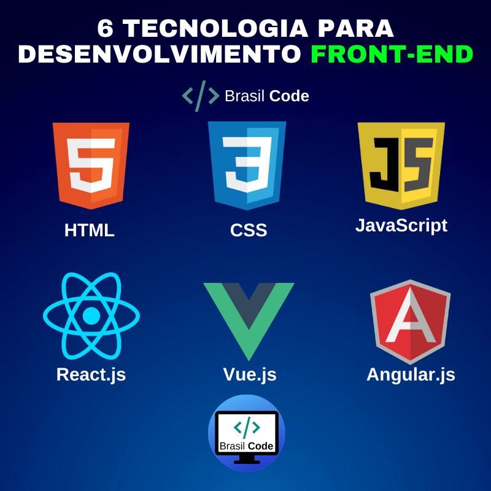

O que é Desenvolvimento Front-end
Desenvolvimento Front-end é a prática de produzir HTML, CSS e JavaScript para um site ou aplicação web, de forma que um usuário possa ver e interagir diretamente com eles.

Para mais informações, visite Desenvolvimento Web na Wikipedia.
O que faz um Desenvolvedor Front-end
Um desenvolvedor front-end é responsável pela implementação visual e interativa de um site ou aplicação web. Eles trabalham com designers para transformar designs em código funcional.
Leia mais sobre a profissão de desenvolvedor front-end neste artigo da Alura.
Principais tecnologias utilizadas no Front End
As principais tecnologias utilizadas no desenvolvimento front-end incluem HTML, CSS e JavaScript. Frameworks e bibliotecas como React, Angular e Vue.js também são amplamente utilizados.
Descubra mais sobre essas tecnologias neste guia da W3Schools.